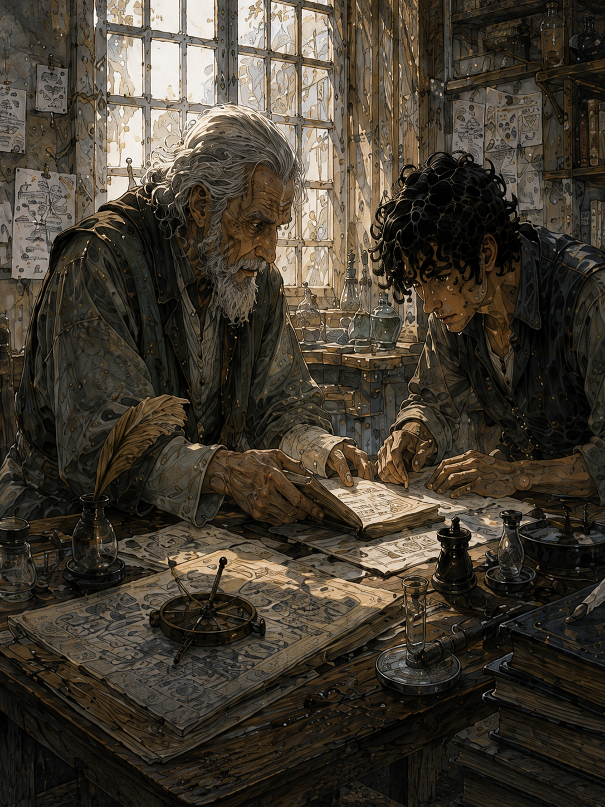
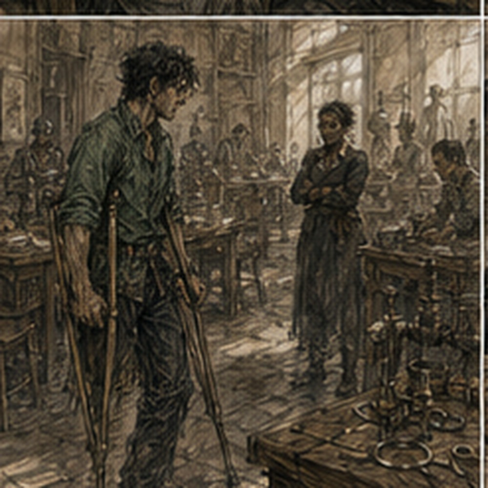

My leg was normal in the morning.
Normal for now.
That qualification had become permanent.
The residual limb was its usual size. No extra heat. No tenderness beyond the places that were normally tender when pressed by someone professionally committed to pressing them.

I went to Hessa.
I wore the green shirt.
This was unrelated.
Probably.
Hessa opened the door and looked at me.
“New shirt.”
“Yes.”
“Good.”
I waited.
“That’s all?”
“What else?”
“I don’t know.”
“You look disappointed.”
“I am learning that everyone has insufficient vocabulary.”
“Sit.”
The chair remained bad.
Good.
The copper strip was on the table.
No stones.
No tea yet.
A folded blanket sat on the examination cot.
That was new.
I looked at it.
Hessa noticed.
“No.”
“I didn’t ask.”
“You were about to.”
“What is the blanket for?”
“Being a blanket.”
I narrowed my eyes.
She almost smiled.
“Leg first.”
Wrapping off.
Check.
Temperature.
Skin.
Pressure.
Questions.
No new swelling.
No drainage.
No heat.
No pain.
Hands fine.
Right calf fine.
Hip fine.
Shoulder fine.
She rewrapped the limb.
“Pessa?”
“Not since the shield session.”
“Good.”
“That sounds like approval.”
“It is.”
“She might train me later.”
“That is between you and Pessa.”
“After this?”
“No.”
I looked at her.
“You just said it was between me and Pessa.”
“It is. I am telling you I think doing both today would be stupid.”
“That is structurally inconsistent.”
“No. You may ask Pessa whether she wants to participate in your stupidity.”
“Hessa.”
“No training today.”
“Medical advice?”
“Yes.”
“Fine.”
She picked up the copper strip.
I sat straighter.
“Not yet.”
I stopped.
“What?”
“Lie down.”
I looked at the cot.
“No.”
“Yes.”
“Why?”
“Because we have done two seated draws.”
“So?”
“So today I want one variable changed.”
I looked at her.
“You said not to turn this into a research project.”
“I am allowed.”
“That is becoming your answer to everything.”
“It works.”
I moved to the cot.
Getting onto it was less elegant than chairs.
One crutch leaned against the wall.
Right hand on cot.
Turn.
Sit.
Lift what remained of the left leg.
Swing right leg up.
Then lie back.
The blanket went under my head, not over me.
I felt cheated.
Hessa moved the second crutch farther from the edge.
“Why lying?”
“Less load through the right leg. Less active balance. Different body position.”
“You think that changes the phantom sensation.”
“I think it might.”
“Because?”
“Because body position changes body sensation.”
“That is offensively broad.”
“Yes.”
“Do you expect the below-knee feeling to return?”
“No.”
“You expect it not to?”
“No.”
“Excellent.”
She sat beside the cot.
The ceiling had a crack running from one corner toward the center.
I had not seen it before.
There were two small brown water marks near the wall.
Carrow construction remained committed to uncertainty.
“Eyes closed,” Hessa said.
I closed them.
“Same amount.”
“As best I can.”
“Yes.”
She looped the copper around her fingers.
I could hear it scrape lightly against skin.
“Draw.”
I reached.
Mana came.
Third time was easier.
That worried me.
Not because anything was wrong.
Because ease felt like permission and permission was not what ease meant.
Chest.
Shoulders.
Arms.
Right side.
Hip.
Thigh.
Lower leg.
Foot.
Left hip.
Thigh.
Knee.
Then calf.
I almost lost the draw.
Not a real calf.
Sensation.
Shape.
Something.
It continued lower.
Not like the first time.
The first had been organized fullness. Occupied.
This was narrower.
A line?
No.
That was too visual.
A sense of extension from knee to ankle.
The foot was not full.
The ankle felt bent.
My absent ankle.
Bent slightly outward.
I had no evidence it was magical.
I had no ankle.
This remained rude.
“Hold,” Hessa said.
I held.
The sensation stayed.
My ordinary phantom toes appeared on top of it.
Or within it.
I could not separate them.
I tried.
That changed it.
The ankle sensation became stronger.
Fuck.
Attention mattered.
Or seemed to.
Or I had just changed my own report by examining it.
“Release.”
I released immediately.
Mana left.
The narrow extension vanished.
The phantom ankle remained bent for perhaps two breaths.
Then returned to its usual vague position.
I opened my eyes.
Hessa was looking at me.
“What?”
I told her.
She did not write yet.
“Again, without interpretation.”
I stared at the ceiling.
“Draw felt normal enough. Left awareness continued below the knee. Narrower than first time. Sense from knee toward ankle. Absent ankle felt angled outward. Foot did not feel occupied. While holding, I tried to separate that from ordinary phantom sensation. The ankle sensation increased when I attended to it. After release the extension disappeared first. Phantom ankle position remained briefly.”
“Pain?”
“No.”
“Cold?”
“No.”
“Heat?”
“No.”
“Pressure?”
“No.”
“Cramping?”
“No.”
“Residual limb?”
“Nothing unusual.”
“Right side?”
“Normal.”
“Breathing?”
“Normal.”
She wrote.
I waited.
“Copper?”
“Confirmed draw.”
“Your sensing?”
“Broadly consistent with the other two.”
“Above knee?”
“Present.”
“Below?”
“I did not establish below-knee channel response.”
I exhaled.
“You enjoy that sentence.”
“It remains true.”
I sat up.
“Stay there.”
“I am sitting.”
“On the cot.”
“Why?”
“Because I want to check aftereffects before you stand.”
Fine.
I sat.
The phantom ankle felt normal.
Normal was now doing dangerous amounts of labor.
“What did changing position tell us?” I asked.
Hessa kept writing.
“That you can draw lying down.”
“That was not in doubt.”
“It was untested.”
I hated that.
“What else?”
“Your subjective below-knee experience changed again.”
“Yes.”
“So now we have occupied, nothing, and narrow extension.”
“Yes.”
“Which means?”
“That your reports are inconsistent.”
“Or variable.”
“Yes.”
“Dependent on position?”
“Maybe.”
“Attention?”
“Maybe.”
“Expectation?”
“Maybe.”
“Channel behavior?”
“Maybe.”
“Body map?”
“Maybe.”
“Interaction?”
“Maybe.”
“This is terrible.”
“No.”
“It is three incompatible results.”
“No.”
“Occupied, absent, line.”
“Those are your descriptions. They are not necessarily three different mechanisms.”
I stopped.
Fine.
“Also,” she said, “you are trying to make the subjective sensation the main result again.”
“It is interesting.”
“Yes.”
“You don’t find it interesting?”
“Very.”
“Then.”
“The main result is still that you completed another minimal draw without pain, instability, obvious shaping, or immediate physical consequence.”
Third draw.

Three successful draws.
That mattered.
I looked at my hands.
Nothing visible.
Still.
“Three.”
“Yes.”
“Hessa.”
“No.”
“I did not ask.”
“You were about to ask when I clear shaping.”
I had been.
“Fine.”
“When do you clear shaping?”
“No.”
I laughed.
She finally poured tea.
From where had the tea been hiding?
There was apparently an infinite supply.
I stayed on the cot because getting down for tea seemed inefficient.
Hessa handed me the cup.
“Are you going to repeat lying down next time?”
“Maybe.”
“Or seated?”
“Maybe.”
“Standing?”
“Maybe.”
“Your profession is built on this word.”
“Your profession is built on asking questions that deserve it.”
Fair.
I drank.
“What would make you move to shaping?”
She looked at me.
Not annoyed.
Considering.
That was worse for my pulse.
“Enough confidence that minimal draw is repeatable without concerning immediate or delayed effects.”
“How much is enough?”
“I don’t know yet.”
“Then what are you looking for?”
“Patterns.”
“That is vague.”
“Yes.”
“Pain?”
“Yes.”
“Delayed swelling?”
“Yes.”
“Fatigue?”
“Yes.”
“Instability?”
“Yes.”
“Unintended shaping?”
“Yes.”
“Changes in baseline phantom symptoms?”
“Yes.”
“Anything else?”
“Yes.”
“What?”
“Things I have not thought of.”
I frowned.
“That is not measurable.”
“It is reality.”
Holl’s testing room appeared in my head.
Sticky tray.
Fields that did not include sticky tray.
I almost said it.
I did not.
Hessa looked at me.
“What?”
“Nothing.”
“That was real nothing?”
“Yes.”
“Good.”
Personal record.
“Can I see your notebook now?”
“No.”
“Still because I’ll reproduce it?”
“Yes.”
“But I already know my reports.”
“You know what you remember saying.”
“That is hostile.”
“It is accurate.”
“Can I keep my own notes?”
“Yes.”
I blinked.
“What?”
“You can write what you experienced after you leave.”
“You told me not to research myself.”
“I told you not to chase records or self-test. Writing symptoms is not self-testing.”
“What if I compare them?”
“You will.”
“That sounded resigned.”
“It is.”
“So allowed?”
“Yes.”
“Can I make a table?”
“No.”
I laughed.
She did too.
Briefly.
There.
Human.
Then gone.
“Paragraphs,” she said.
“You are prescribing prose?”
“I am preventing columns.”
“This is discrimination against structure.”
“Good.”
I finished the tea.
Hessa checked the residual limb again.
No change.
Hands.
No tremor.
Pulse had settled.
She had me sit another few minutes.
Then:
“Stand.”
Both crutches.
Right foot.
Push.
No problem.
The phantom foot felt present but not planted.
No cold.
No extension.
No magical anything.
I reported it.
She wrote.
“Tomorrow?” I asked.
“No.”
I stared.
“Another boring day?”
“Yes.”
“This is becoming excessive.”
“Day after.”
“Again?”
“Yes.”
“Why?”
“Because three successful draws in four days is enough information for now.”
“That sounds almost optimistic.”
“It is cautious.”
“Those can coexist.”
“Yes.”
I smiled.
She pointed at the door.
“Go.”
“Pessa?”
“Tell her no training today.”
“She owns movement.”
“Tell her I said no training today.”
“And if she disagrees?”
“She won’t.”
“That is confidence.”
“That is knowing Pessa.”
Interesting.
I collected the crutches.
At the door Hessa said, “Greg.”
I turned.
“No draw.”
“I will not draw mana without you or someone you explicitly clear.”
“Good.”
“No shaping.”
“Good.”
“No casting.”
“Good.”
“No private experiments.”
“Good.”
“I may write paragraphs.”
She sighed.
“Yes.”
I opened the door.
“Not tables.”
“I heard you.”
Outside, Carrow was bright and loud and entirely uninterested in my third successful mana draw.
A wagon nearly splashed me with gutter water.
Someone was arguing about onions.
A bell rang twice from somewhere west.
I stood there in my green shirt with two crutches and a body that remained an instrument no one had calibrated.
Three draws.
Three different below-knee reports.
No pain.
No answer.
I was pleased anyway.
Then the onion argument became more interesting.
I went that way.